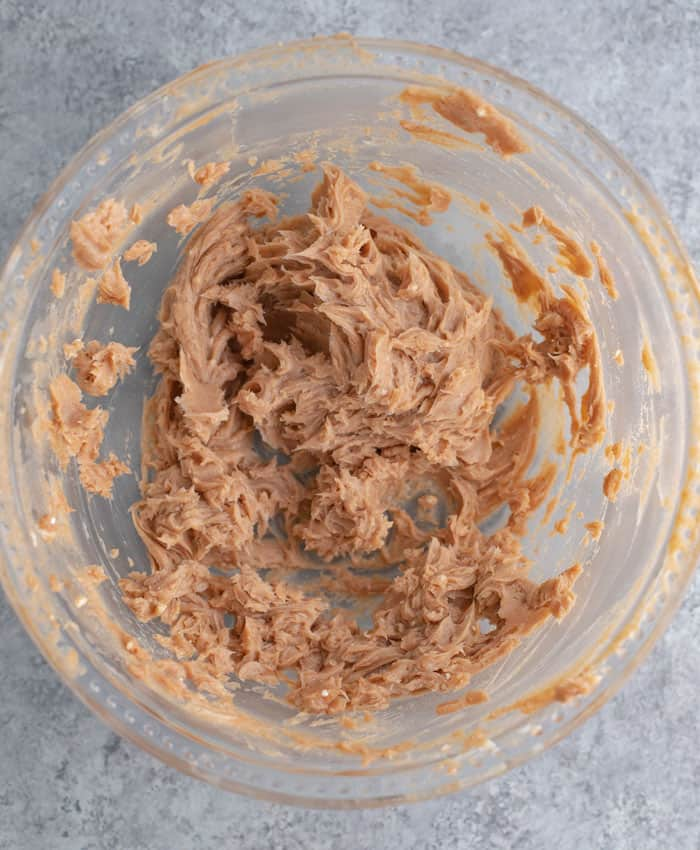

Copycat Texas Roadhouse Butter

Description
An American style goulash that tastes like a warm hug on a cold day! A a beefy mix of onion, green bell peppers, garlic, and tomatoes will surely satisfy any craving you may have.
Yield : 8 Tablespoons
Estimated Time : 5 Minutes
Ingredients
- One stick of salted butter (at room temperature).
- 1/4 cup of powdered sugar
- One and a half tablespoons of honey
- 3/4 teaspoon of cinnamon
Equipment
- Mixing bowl
- A rubber spatula
Recipe
- Ensure butter is very soft and has been at room tempature for at least an hour.
- Mix all ingredients until its creamy and smooth
- Serve and enjoy!
Back to home